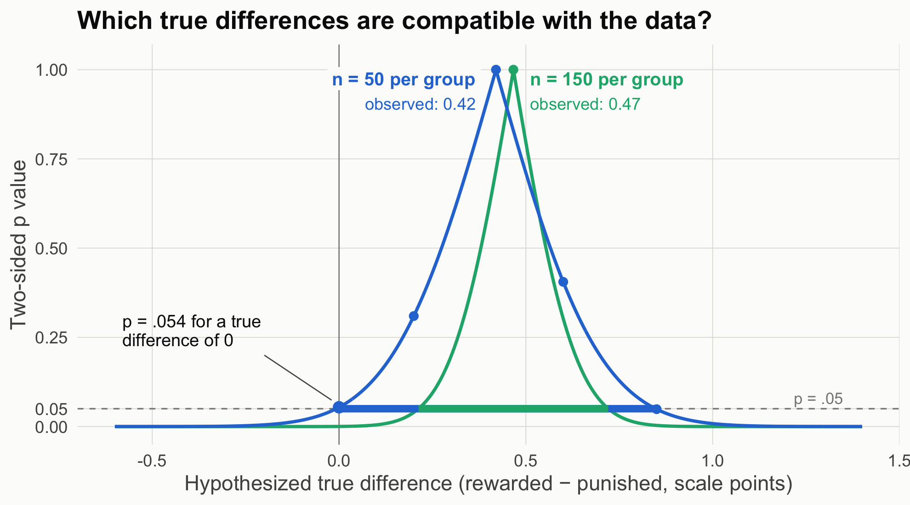

Readers of the rewarded ending rated their enjoyment 4.54 on average, and readers of the punished ending 4.12, with 50 people per group. Write the one sentence you would put in the results section.
The frequentist question: how surprising are these data if the model were true?
s1_15 <-read.csv("data/story_n15.csv") # Study 1 at three sample sizess1_50 <-read.csv("data/story_n50.csv")s1_150 <-read.csv("data/story_n150.csv")s50 <-two_group(s1_50)s150 <-two_group(s1_150)t.test(enjoyment ~factor(condition, levels =c("rewarded", "punished")),data = s1_50, var.equal =TRUE)
Two Sample t-test
data: enjoyment by factor(condition, levels = c("rewarded", "punished"))
t = 1.9496, df = 98, p-value = 0.05408
alternative hypothesis: true difference in means between group rewarded and group punished is not equal to 0
95 percent confidence interval:
-0.007504973 0.847504973
sample estimates:
mean in group rewarded mean in group punished
4.54 4.12
The difference is 0.42 points, 95% CI [-0.01, 0.85], p = .054. The p value is the probability of a t statistic at least this far from zero if every assumption of the model held, including a true difference of exactly zero (Greenland et al., 2016). It is not the probability that the null is true.
Explainer: the t statistic
The t statistic is the observed difference divided by its standard error: how many standard errors the difference sits away from zero. Here, 0.42 ÷ 0.215 ≈ 1.95. If the true difference were zero (and the model’s other assumptions held), t values at least this far from zero, in either direction, would occur about 5.4% of the time. That share is the p value.
From one p value to a p-value function
A p value tests one hypothesized value, usually zero. Nothing stops us from testing other values. Here are ordinary t-tests of the same n = 50 data against five different hypothesized true differences:
Each row is the same test you already know; only the null value changes. The p value is 1 when the hypothesized difference equals the observed one (0.42) and shrinks as the hypothesis moves away from it in either direction. Do this for every possible value, connect the results, and you get the p-value function, also called a compatibility curve: how compatible the data are with each possible true difference (Greenland et al., 2016). The 95% CI is simply the set of values where the curve sits above .05. The figure adds the curve for the n = 150 study for comparison.
Code
mu <-sort(c(seq(-0.6, 1.4, by =0.005), s50$diff, s150$diff)) # include each exact peakpf <-rbind(data.frame(mu, p =p_function(s50, mu), n ="n = 50 per group"),data.frame(mu, p =p_function(s150, mu), n ="n = 150 per group"))ci_df <-data.frame(n =c("n = 50 per group", "n = 150 per group"),lo =c(s50$ci[1], s150$ci[1]), hi =c(s50$ci[2], s150$ci[2]))bg <-"#fcfcfb"# plot background; the label boxes hide the zero line behind the textggplot(pf, aes(mu, p, color = n)) +geom_hline(yintercept =0.05, color = pal[["gray"]], linetype ="dashed") +geom_vline(xintercept =0, color = pal[["gray"]], linewidth =0.4) +geom_line(linewidth =1.1) +geom_segment(data = ci_df, aes(x = lo, xend = hi, y =0.05, yend =0.05, color = n),linewidth =2.5, inherit.aes =FALSE) +annotate("point", x = mu0[-1], y = p_at_mu0[-1], size =2.6, color = pal[["blue"]]) +annotate("point", x =0, y = s50$p, size =3.5, color = pal[["blue"]]) +annotate("point", x = s150$diff, y =1, size =2.6, color = pal[["aqua"]]) +# each curve peaks (p = 1) at its own study's observed differenceannotate("label", x = s50$diff -0.04, y =0.975, hjust =1, size =4.6, fontface ="bold",color = pal[["blue"]], fill = bg, label.size =0, label ="n = 50 per group") +annotate("label", x = s50$diff -0.04, y =0.905, hjust =1, size =4.2,color = pal[["blue"]], fill = bg, label.size =0, label =sprintf("observed: %.2f", s50$diff)) +annotate("text", x = s150$diff +0.045, y =0.975, hjust =0, size =4.6, fontface ="bold",color = pal[["aqua"]], label ="n = 150 per group") +annotate("text", x = s150$diff +0.045, y =0.905, hjust =0, size =4.2,color = pal[["aqua"]], label =sprintf("observed: %.2f", s150$diff)) +annotate("segment", x =-0.2, xend =-0.02, y =0.2, yend = s50$p +0.02, color = pal[["ink2"]], linewidth =0.4) +annotate("text", x =-0.58, y =0.27, hjust =0, size =4.4, color = pal[["ink"]], lineheight =0.9,label =sprintf("p = %s for a true\ndifference of 0", fmt_p(s50$p))) +annotate("text", x =1.35, y =0.08, label ="p = .05", hjust =1, color = pal[["gray"]], size =4) +scale_color_manual(values =c("n = 50 per group"= pal[["blue"]], "n = 150 per group"= pal[["aqua"]])) +scale_y_continuous(limits =c(0, 1.02), breaks =c(0, .05, .25, .5, .75, 1)) +labs(x ="Hypothesized true difference (rewarded − punished, scale points)",y ="Two-sided p value", title ="Which true differences are compatible with the data?") +theme_demo()

Figure 1: The p-value function for Study 1 at two sample sizes. Each point on a curve is a t-test of that study’s data against one hypothesized true difference, so each curve peaks (p = 1) at its own study’s observed difference. Thick segments at p = .05 mark the 95% CIs.
How to read this figure
Horizontal axis: candidate values for the true difference, in scale points. Each one is a possible null hypothesis.
Vertical axis: the two-sided p value from testing the data against that candidate. The five dots on the blue curve are the five tests in the table above.
The peak of each curve (the dot at p = 1) sits at that study’s observed difference: no candidate is more compatible with the data. The two peaks differ because each curve comes from its own dataset, with its own estimate (0.42 points at n = 50, 0.47 at n = 150). Both estimates scatter around the same true effect. A bigger study gives a narrower curve, but its estimate is not guaranteed to land closer to the truth.
The usual reported p value is the height of the curve at zero (p = .054 for n = 50).
Where the curve crosses the dashed p = .05 line are the limits of the 95% CI (the thick segments).
A narrower curve means a more precise estimate. With n = 150 (aqua), fewer values remain compatible, and zero is no longer among them.
Caution: the height is not the probability that a value is true. It says how surprising the data would be if that value were true.
At n = 50, zero is barely inside the compatible range, and so are differences as large as 0.85 points. “No effect” and “a fairly large effect” are both compatible with these data.
The Bayesian question: given these data, what should I believe about the difference?
Bayesian estimation starts from a prior (what you believed before), multiplies it by the likelihood (how well each candidate value predicts the data), and normalizes to get the posterior (Etz & Vandekerckhove, 2018). We do it the most transparent way possible: evaluate prior × likelihood at a fine grid of candidate values (every 0.0025 points from −3 to 4) and rescale so the area is 1. This is called grid approximation.
Explainer: prior, likelihood, posterior
Prior: a probability distribution over the possible true differences before seeing these data. “Normal(0, 0.25)” means centered on 0 with SD 0.25, so about 95% of the prior’s weight sits between −0.5 and +0.5.
Likelihood: for each candidate true difference, how probable the observed data would be if that candidate were true. It is not a probability distribution over the candidates; it scores how well each one predicted the data.
Posterior: prior × likelihood, rescaled so the total area is 1. It is the updated distribution over the true difference after seeing the data.
Grid approximation: instead of solving the math, compute prior × likelihood at thousands of closely spaced candidate values and add them up. It works whenever there are only one or two unknowns (Johnson et al., 2022, ch. 6).
We compare two priors on the raw difference:
Flat: every difference equally plausible beforehand.
Skeptical: Normal(0, 0.25). Most effects of message features on enjoyment are small; 95% of the prior sits within ±0.5 points.
Figure 2: Prior (gray, dashed), likelihood (orange), and posterior (blue) for the n = 50 data. The flat prior’s posterior is the likelihood itself.
How to read this figure
Each panel starts from a different prior (gray, dashed): flat on the left, skeptical on the right.
The likelihood (orange) is the same in both panels, because the data do not change with the prior. On the left it is hidden under the posterior.
The posterior (blue) combines the two. With a flat prior it coincides with the likelihood; with the skeptical prior it sits between prior and likelihood, pulled toward zero and narrower than either.
The area under the blue curve to the right of the vertical line at zero is P(difference > 0).
Two things to notice:
With a flat prior, the 95% credible interval equals the 95% confidence interval to the second decimal. The numbers are identical; the sentences are not. The credible interval licenses “there is a 95% probability the difference lies in this range, given the model and prior.” The CI does not.
The flat prior gives P(difference > 0) = 0.973, which is 1 minus the one-sided p value (0.027). Same arithmetic, different question answered. The skeptical prior pulls the estimate toward zero and makes you less sure of the sign.
Explainer: confidence interval vs. credible interval (CrI)
A 95% confidence interval comes from a procedure that, over many repetitions of the study, captures the true value 95% of the time. Any single interval either contains the true value or does not; the 95% describes the procedure, not this interval (Greenland et al., 2016).
A 95% credible interval (CrI) contains 95% of the posterior distribution. Given the model and the prior, there is a 95% probability that the true value lies inside this interval.
With a flat prior the two can be numerically identical, as here. They still license different sentences.
The Bayes factor: a third question
bf50 <-bf_default(s1_50) # JASP default: Cauchy prior on δ with scale 0.707bf50
The posterior said “probably positive,” yet BF₁₀ ≈ 1.12 says the data barely distinguish “no effect” from the default alternative. Both are Bayesian. They disagree because they answer different questions:
Estimation assumes there is some difference and asks how big it is.
The Bayes factor compares two models: one where the difference is exactly zero, and one where it is spread out according to a prior (here the JASP default, a Cauchy with scale 0.707 on δ). It asks which model predicted the observed data better. Scene 2 opens that box.
Explainer: reading a Bayes factor
BF₁₀ is how probable the observed data are under H₁ (an effect, with its possible sizes described by a prior) divided by how probable they are under H₀ (no effect). The subscripts say which hypothesis is on top: BF₁₀ = 3 means the data were three times more likely under H₁. BF₀₁ = 1 / BF₁₀ flips it.
Near 1, the data do not discriminate between the two hypotheses. JASP prints verbal labels: 1–3 “anecdotal,” 3–10 “moderate,” 10–30 “strong,” 30–100 “very strong,” above 100 “extreme.” These are conventions, not thresholds.
A Bayes factor is not the probability that H₁ is true. Getting there requires prior odds: posterior odds = prior odds × Bayes factor (Etz & Vandekerckhove, 2018).
JASP’s default H₁ puts a Cauchy prior on δ with scale 0.707: a bell-shaped curve centered at zero with heavy tails. Half its weight lies between δ = −0.707 and +0.707, so it expects moderate-to-large effects and allows very large ones.
The same true effect (δ = 0.30) generated all three rows; by design, only the sample size differs. The estimates still bounce around from row to row (sampling variability), but precision improves steadily: the intervals narrow as n grows. The skeptical prior also matters less and less as the data overwhelm it.
What each framework lets you say (n = 50)
Frequentist: “Enjoyment was 0.42 points higher after the rewarded ending, 95% CI [−0.01, 0.85], p = .054. The data are compatible with differences from about zero to 0.85 points.”
Bayesian estimation: “Under a flat prior, there is a 97% posterior probability that the true mean difference is positive; under a skeptical prior, 93%.”
Bayes factor: “The data are about equally likely under no effect and under the default alternative (BF₁₀ = 1.12).” That is a statement about these two hypotheses only; Scene 2 shows a sharper alternative doing better.
Theory-building takeaway. A p value and a posterior are answers to different questions. Decide which question your theory needs answered before you look at the output.
Your turn
Change the skeptical prior’s SD from 0.25 to 0.10, then to 1. At what SD does the prior stop mattering at n = 50?
Using the n = 15 data, compute P(difference > 0) under each prior. Would you publish that sentence?
Source Code
---title: "Scene 1 · Same data, two questions"---```{r}#| label: setup#| include: falsesource("R/helpers.R")suppressPackageStartupMessages({library(BayesFactor)library(patchwork)})knitr::opts_chunk$set(fig.align ="center")```::: {.callout-important title="Predict first"}Readers of the rewarded ending rated their enjoyment 4.54 on average, and readers of the punished ending 4.12, with 50 people per group. Write the one sentence you would put in the results section.:::## The frequentist question: how surprising are these data if the model were true?```{r}#| label: s1-freqs1_15 <-read.csv("data/story_n15.csv") # Study 1 at three sample sizess1_50 <-read.csv("data/story_n50.csv")s1_150 <-read.csv("data/story_n150.csv")s50 <-two_group(s1_50)s150 <-two_group(s1_150)t.test(enjoyment ~factor(condition, levels =c("rewarded", "punished")),data = s1_50, var.equal =TRUE)```The difference is `r sprintf("%.2f", s50$diff)` points, 95% CI [`r sprintf("%.2f", s50$ci[1])`, `r sprintf("%.2f", s50$ci[2])`], *p* = `r fmt_p(s50$p)`. The *p* value is the probability of a *t* statistic at least this far from zero **if every assumption of the model held, including a true difference of exactly zero** (Greenland et al., 2016). It is not the probability that the null is true.::: {.callout-note collapse="true" title="Explainer: the t statistic"}The *t* statistic is the observed difference divided by its standard error: how many standard errors the difference sits away from zero. Here, 0.42 ÷ 0.215 ≈ 1.95. If the true difference were zero (and the model's other assumptions held), *t* values at least this far from zero, in either direction, would occur about 5.4% of the time. That share is the *p* value.:::## From one *p* value to a p-value functionA *p* value tests one hypothesized value, usually zero. Nothing stops us from testing other values. Here are ordinary *t*-tests of the same n = 50 data against five different hypothesized true differences:```{r}#| label: s1-many-testsrewarded <- s1_50$enjoyment[s1_50$condition =="rewarded"]punished <- s1_50$enjoyment[s1_50$condition =="punished"]mu0 <-c(0, 0.2, 0.42, 0.6, 0.85)p_at_mu0 <-sapply(mu0, function(m) t.test(rewarded, punished, mu = m, var.equal =TRUE)$p.value)knitr::kable(data.frame(`Null hypothesis: true difference =`= mu0, `Two-sided p`=sprintf("%.3f", p_at_mu0),check.names =FALSE), align ="cc")```Each row is the same test you already know; only the null value changes. The *p* value is 1 when the hypothesized difference equals the observed one (0.42) and shrinks as the hypothesis moves away from it in either direction. Do this for every possible value, connect the results, and you get the **p-value function**, also called a compatibility curve: how compatible the data are with each possible true difference (Greenland et al., 2016). The 95% CI is simply the set of values where the curve sits above .05. The figure adds the curve for the n = 150 study for comparison.```{r}#| label: fig-pfun#| code-fold: true#| fig-cap: "The p-value function for Study 1 at two sample sizes. Each point on a curve is a t-test of that study's data against one hypothesized true difference, so each curve peaks (p = 1) at its own study's observed difference. Thick segments at p = .05 mark the 95% CIs."mu <-sort(c(seq(-0.6, 1.4, by =0.005), s50$diff, s150$diff)) # include each exact peakpf <-rbind(data.frame(mu, p =p_function(s50, mu), n ="n = 50 per group"),data.frame(mu, p =p_function(s150, mu), n ="n = 150 per group"))ci_df <-data.frame(n =c("n = 50 per group", "n = 150 per group"),lo =c(s50$ci[1], s150$ci[1]), hi =c(s50$ci[2], s150$ci[2]))bg <-"#fcfcfb"# plot background; the label boxes hide the zero line behind the textggplot(pf, aes(mu, p, color = n)) +geom_hline(yintercept =0.05, color = pal[["gray"]], linetype ="dashed") +geom_vline(xintercept =0, color = pal[["gray"]], linewidth =0.4) +geom_line(linewidth =1.1) +geom_segment(data = ci_df, aes(x = lo, xend = hi, y =0.05, yend =0.05, color = n),linewidth =2.5, inherit.aes =FALSE) +annotate("point", x = mu0[-1], y = p_at_mu0[-1], size =2.6, color = pal[["blue"]]) +annotate("point", x =0, y = s50$p, size =3.5, color = pal[["blue"]]) +annotate("point", x = s150$diff, y =1, size =2.6, color = pal[["aqua"]]) +# each curve peaks (p = 1) at its own study's observed differenceannotate("label", x = s50$diff -0.04, y =0.975, hjust =1, size =4.6, fontface ="bold",color = pal[["blue"]], fill = bg, label.size =0, label ="n = 50 per group") +annotate("label", x = s50$diff -0.04, y =0.905, hjust =1, size =4.2,color = pal[["blue"]], fill = bg, label.size =0, label =sprintf("observed: %.2f", s50$diff)) +annotate("text", x = s150$diff +0.045, y =0.975, hjust =0, size =4.6, fontface ="bold",color = pal[["aqua"]], label ="n = 150 per group") +annotate("text", x = s150$diff +0.045, y =0.905, hjust =0, size =4.2,color = pal[["aqua"]], label =sprintf("observed: %.2f", s150$diff)) +annotate("segment", x =-0.2, xend =-0.02, y =0.2, yend = s50$p +0.02, color = pal[["ink2"]], linewidth =0.4) +annotate("text", x =-0.58, y =0.27, hjust =0, size =4.4, color = pal[["ink"]], lineheight =0.9,label =sprintf("p = %s for a true\ndifference of 0", fmt_p(s50$p))) +annotate("text", x =1.35, y =0.08, label ="p = .05", hjust =1, color = pal[["gray"]], size =4) +scale_color_manual(values =c("n = 50 per group"= pal[["blue"]], "n = 150 per group"= pal[["aqua"]])) +scale_y_continuous(limits =c(0, 1.02), breaks =c(0, .05, .25, .5, .75, 1)) +labs(x ="Hypothesized true difference (rewarded − punished, scale points)",y ="Two-sided p value", title ="Which true differences are compatible with the data?") +theme_demo()```::: {.callout-note appearance="simple" title="How to read this figure"}1. **Horizontal axis:** candidate values for the true difference, in scale points. Each one is a possible null hypothesis.2. **Vertical axis:** the two-sided *p* value from testing the data against that candidate. The five dots on the blue curve are the five tests in the table above.3. **The peak** of each curve (the dot at *p* = 1) sits at that study's observed difference: no candidate is more compatible with the data. The two peaks differ because each curve comes from its own dataset, with its own estimate (`r sprintf("%.2f", s50$diff)` points at n = 50, `r sprintf("%.2f", s150$diff)` at n = 150). Both estimates scatter around the same true effect. A bigger study gives a narrower curve, but its estimate is not guaranteed to land closer to the truth.4. **The usual reported *p* value** is the height of the curve at zero (*p* = .054 for n = 50).5. **Where the curve crosses the dashed *p* = .05 line** are the limits of the 95% CI (the thick segments).6. **A narrower curve means a more precise estimate.** With n = 150 (aqua), fewer values remain compatible, and zero is no longer among them.7. **Caution:** the height is not the probability that a value is true. It says how surprising the data would be if that value were true.:::At *n* = 50, zero is barely inside the compatible range, and so are differences as large as 0.85 points. "No effect" and "a fairly large effect" are both compatible with these data.## The Bayesian question: given these data, what should I believe about the difference?Bayesian estimation starts from a **prior** (what you believed before), multiplies it by the **likelihood** (how well each candidate value predicts the data), and normalizes to get the **posterior** (Etz & Vandekerckhove, 2018). We do it the most transparent way possible: evaluate prior × likelihood at a fine grid of candidate values (every 0.0025 points from −3 to 4) and rescale so the area is 1. This is called grid approximation.::: {.callout-note collapse="true" title="Explainer: prior, likelihood, posterior"}- **Prior:** a probability distribution over the possible true differences *before* seeing these data. "Normal(0, 0.25)" means centered on 0 with SD 0.25, so about 95% of the prior's weight sits between −0.5 and +0.5.- **Likelihood:** for each candidate true difference, how probable the observed data would be if that candidate were true. It is not a probability distribution over the candidates; it scores how well each one predicted the data.- **Posterior:** prior × likelihood, rescaled so the total area is 1. It is the updated distribution over the true difference after seeing the data.- **Grid approximation:** instead of solving the math, compute prior × likelihood at thousands of closely spaced candidate values and add them up. It works whenever there are only one or two unknowns (Johnson et al., 2022, ch. 6).:::We compare two priors on the raw difference:- **Flat:** every difference equally plausible beforehand.- **Skeptical:** Normal(0, 0.25). Most effects of message features on enjoyment are small; 95% of the prior sits within ±0.5 points.```{r}#| label: s1-bayesgrid <-seq(-3, 4, by =0.0025)flat <-grid_posterior(grid, rep(1, length(grid)), lik_diff(s50, grid))skeptical <-grid_posterior(grid, dnorm(grid, 0, 0.25), lik_diff(s50, grid))rbind(flat =post_summary(grid, flat$posterior),skeptical =post_summary(grid, skeptical$posterior)) |>round(3)``````{r}#| label: fig-post#| code-fold: true#| fig-height: 4.6#| fig-cap: "Prior (gray, dashed), likelihood (orange), and posterior (blue) for the n = 50 data. The flat prior's posterior is the likelihood itself."long <-function(g, label) {rbind(data.frame(x = g$x, y = g$prior, what ="prior", panel = label),data.frame(x = g$x, y = g$likelihood, what ="likelihood", panel = label),data.frame(x = g$x, y = g$posterior, what ="posterior", panel = label))}pd <-rbind(long(flat, "Flat prior"), long(skeptical, "Skeptical prior: Normal(0, 0.25)"))pd$what <-factor(pd$what, levels =c("prior", "likelihood", "posterior"))lab <-do.call(rbind, lapply(split(pd, list(pd$panel, pd$what)), function(z) { i <-which.max(z$y); data.frame(x = z$x[i], y = z$y[i], what = z$what[1], panel = z$panel[1])}))lab$x <- lab$x +ifelse(lab$what =="prior", -0.25, ifelse(lab$what =="likelihood", 0.42, -0.42))lab$y <- lab$y +ifelse(lab$what =="prior", 0.12, 0.05)lab$what_lab <-as.character(lab$what)lab$what_lab[lab$panel =="Flat prior"& lab$what =="posterior"] <-"posterior = likelihood"lab$x[lab$panel =="Flat prior"& lab$what =="posterior"] <-0.42lab$y[lab$panel =="Flat prior"& lab$what =="posterior"] <-2.05lab$what_lab[lab$panel =="Flat prior"& lab$what =="prior"] <-"flat prior"lab$x[lab$panel =="Flat prior"& lab$what =="prior"] <--0.55lab$y[lab$panel =="Flat prior"& lab$what =="prior"] <-0.45lab <- lab[!(lab$panel =="Flat prior"& lab$what =="likelihood"), ]ggplot(pd, aes(x, y, color = what, linetype = what)) +geom_vline(xintercept =0, color = pal[["gray"]], linewidth =0.4) +geom_line(linewidth =1.1) +geom_text(data = lab, aes(label = what_lab), size =4.6, fontface ="bold", show.legend =FALSE) +facet_wrap(~panel) +scale_color_manual(values =c(prior = pal[["gray"]], likelihood = pal[["orange"]], posterior = pal[["blue"]])) +scale_linetype_manual(values =c(prior ="dashed", likelihood ="solid", posterior ="solid")) +coord_cartesian(xlim =c(-0.8, 1.4)) +labs(x ="True difference (scale points)", y ="Density") +theme_demo()```::: {.callout-note appearance="simple" title="How to read this figure"}1. Each panel starts from a different **prior** (gray, dashed): flat on the left, skeptical on the right.2. The **likelihood** (orange) is the same in both panels, because the data do not change with the prior. On the left it is hidden under the posterior.3. The **posterior** (blue) combines the two. With a flat prior it coincides with the likelihood; with the skeptical prior it sits between prior and likelihood, pulled toward zero and narrower than either.4. The area under the blue curve to the right of the vertical line at zero is P(difference > 0).:::Two things to notice:1. **With a flat prior, the 95% credible interval equals the 95% confidence interval** to the second decimal. The numbers are identical; the sentences are not. The credible interval licenses "there is a 95% probability the difference lies in this range, given the model and prior." The CI does not.2. **The flat prior gives P(difference > 0) = `r sprintf("%.3f", post_summary(grid, flat$posterior)["p_pos"])`**, which is 1 minus the one-sided *p* value (`r sprintf("%.3f", s50$p / 2)`). Same arithmetic, different question answered. The skeptical prior pulls the estimate toward zero and makes you less sure of the sign.::: {.callout-note collapse="true" title="Explainer: confidence interval vs. credible interval (CrI)"}- A **95% confidence interval** comes from a procedure that, over many repetitions of the study, captures the true value 95% of the time. Any single interval either contains the true value or does not; the 95% describes the procedure, not this interval (Greenland et al., 2016).- A **95% credible interval** (CrI) contains 95% of the posterior distribution. Given the model and the prior, there is a 95% probability that the true value lies inside *this* interval.- With a flat prior the two can be numerically identical, as here. They still license different sentences.:::## The Bayes factor: a third question```{r}#| label: s1-bfbf50 <-bf_default(s1_50) # JASP default: Cauchy prior on δ with scale 0.707bf50```The posterior said "probably positive," yet BF₁₀ ≈ `r fmt_bf(extractBF(bf50)$bf)` says the data barely distinguish "no effect" from the default alternative. Both are Bayesian. They disagree because they answer different questions:- **Estimation** assumes there is some difference and asks how big it is.- **The Bayes factor** compares two models: one where the difference is exactly zero, and one where it is spread out according to a prior (here the JASP default, a Cauchy with scale 0.707 on δ). It asks which model predicted the observed data better. [Scene 2](scene-2.qmd) opens that box.::: {.callout-note collapse="true" title="Explainer: reading a Bayes factor"}- **BF₁₀** is how probable the observed data are under H₁ (an effect, with its possible sizes described by a prior) divided by how probable they are under H₀ (no effect). The subscripts say which hypothesis is on top: BF₁₀ = 3 means the data were three times more likely under H₁. **BF₀₁** = 1 / BF₁₀ flips it.- **Near 1**, the data do not discriminate between the two hypotheses. JASP prints verbal labels: 1–3 "anecdotal," 3–10 "moderate," 10–30 "strong," 30–100 "very strong," above 100 "extreme." These are conventions, not thresholds.- A Bayes factor is **not** the probability that H₁ is true. Getting there requires prior odds: posterior odds = prior odds × Bayes factor (Etz & Vandekerckhove, 2018).- **JASP's default H₁** puts a Cauchy prior on δ with scale 0.707: a bell-shaped curve centered at zero with heavy tails. Half its weight lies between δ = −0.707 and +0.707, so it expects moderate-to-large effects and allows very large ones.:::## All three sample sizes```{r}#| label: s1-table#| code-fold: truerow <-function(d, label) { s <-two_group(d) g <-grid_posterior(grid, dnorm(grid, 0, 0.25), lik_diff(s, grid)) ps <-post_summary(grid, g$posterior)data.frame(`n per group`= label,`Diff [95% CI]`=sprintf("%.2f [%.2f, %.2f]", s$diff, s$ci[1], s$ci[2]),p =fmt_p(s$p), d =sprintf("%.2f", s$d),`P(diff > 0), flat`=sprintf("%.3f", 1-pt(-s$t, s$df)),`Skeptical posterior [95% CrI]`=sprintf("%.2f [%.2f, %.2f]", ps["mean"], ps["lo95"], ps["hi95"]),`BF10 (default)`=fmt_bf(extractBF(bf_default(d))$bf),check.names =FALSE)}knitr::kable(rbind(row(s1_15, 15), row(s1_50, 50), row(s1_150, 150)), align ="lcccccc")```The same true effect (δ = 0.30) generated all three rows; by design, only the sample size differs. The estimates still bounce around from row to row (sampling variability), but precision improves steadily: the intervals narrow as *n* grows. The skeptical prior also matters less and less as the data overwhelm it.::: {.callout-tip title="What each framework lets you say (n = 50)"}- **Frequentist:** "Enjoyment was 0.42 points higher after the rewarded ending, 95% CI [−0.01, 0.85], *p* = .054. The data are compatible with differences from about zero to 0.85 points."- **Bayesian estimation:** "Under a flat prior, there is a 97% posterior probability that the true mean difference is positive; under a skeptical prior, 93%."- **Bayes factor:** "The data are about equally likely under no effect and under the default alternative (BF₁₀ = 1.12)." That is a statement about these two hypotheses only; [Scene 2](scene-2.qmd) shows a sharper alternative doing better.:::**Theory-building takeaway.** A *p* value and a posterior are answers to different questions. Decide which question your theory needs answered *before* you look at the output.::: {.callout-warning title="Your turn"}1. Change the skeptical prior's SD from 0.25 to 0.10, then to 1. At what SD does the prior stop mattering at *n* = 50?2. Using the n = 15 data, compute P(difference > 0) under each prior. Would you publish that sentence?:::